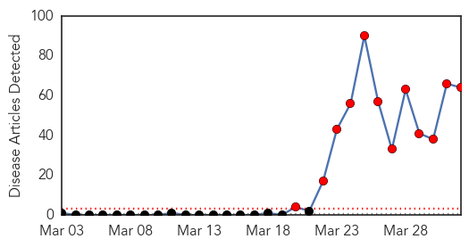
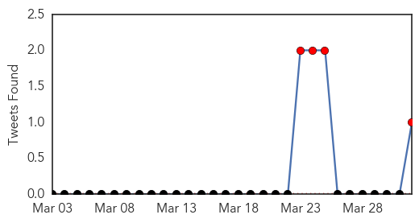
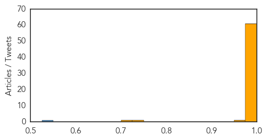
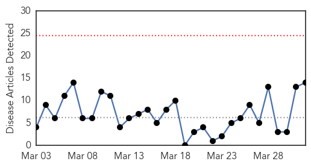

Ebola
30-Day Web Trend
12 alerts, 0 warnings

30-Day Twitter Trend
4 alerts, 0 warnings

Article Locations
Article Confidences
Top Articles:
- 1.000
- Aid agency worker dies as Ebola outbreak spreads · TheJournal.ie
- 1.000
- Guinea's Ebola outbreak: what is the virus and what's being done?
- 1.000
- Scale of Guinea’s Ebola epidemic unprecedented -aid agency
- 1.000
- UN health agency works to contain Ebola outbreak in Guinea
- 1.000
- Explainer: What is Ebola?
- 1.000
- 'Unprecedented' Ebola Outbreak Sweeping Across Parts Of West Africa
- 1.000
- Explainer: What is the Ebola virus?
- 1.000
- Why Is Guinea's Ebola Outbreak So Unusual? : Shots
- 1.000
- Africa: Ebola outbreak reaches 'unprecedented levels' as it sweeps across west coast of Africa
- 1.000
- Morocco steps up guard after Ebola outbreak in Guinea
- 1.000
- Ebola outbreak in Guinea an 'unprecedented epidemic'
- 1.000
- Liberia confirms first Ebola cases
- 1.000
- Ebola Virus Spreading To Liberia, While Guinea Reports 78 Suspected Deaths From The Incurable Disease
- 1.000
- UN health agency working to contain Ebola outbreak in Guinea
- 1.000
- Officials fear Ebola outbreak could spread
- 1.000
- Scale of Guinea’s Ebola epidemic unprecedented, says aid agency
- 1.000
- Morocco steps up guard after Ebola outbreak - Africa
- 1.000
- Tracking the Deadliest Ebola Outbreak in Years
- 1.000
- Ebola spreads to Liberia from Guinea
- 1.000
- Ebola threatens West Africa
- 1.000
- Eyewitness: Ebola outbreak fears
- 1.000
- Ebola outbreak in Guinea 'limited geographically'
- 1.000
- Visa ban on pilgrims from states hit by Ebola virus
- 1.000
- Unprecedented Ebola epidemic kills 78 in Guinea
- 1.000
- Deadly Ebola Outbreak In Guinea Is Spreading
- 1.000
- WHO supplies arrive in Guinea to support the Ebola outbreak response - Guinea
- 1.000
- Ebola virus spreads across Liberia, haunts the region
- 0.999
- WHO says Guinea Ebola outbreak small as MSF slams international response
- 0.999
- Saudi Arabia suspends visas over Guinea Ebola outbreak
- 0.999
- Medic tells of horrific scenes in Guinea's fight against Ebola virus
- 0.999
- West African Ebola Outbreak Spreads
- 0.999
- “Unprecedented” Ebola outbreak kills at least 80 in Guinea
- 0.999
- WHO says Guinea Ebola outbreak small as MSF slams international response
- 0.999
- Guinea battles to contain Ebola as Senegal closes its border
- 0.999
- Why the World Health Organization is taking the ebola outbreak in Guinea 'very seriously'
- 0.999
- Ebola's Spread to Liberia Adds To Death Toll; 78 Dead in Guinea
- 0.999
- Battling fear and stigma over Ebola in West Africa
- 0.999
- Liberia confirms spread of 'unprecedented' Ebola epidemic
- 0.999
- Guinea battles to contain Ebola as death toll rises
- 0.999
- Deadly Ebola virus outbreak, begun in Guinea now hits Liberia
- 0.999
- World Health Organization plays down extent of Ebola outbreak 02/04/2014
- 0.999
- UN health agency working to contain Ebola outbreak in Guinea - Guinea
- 0.999
- Battling fear and stigma over Ebola in West Africa - Guinea
- 0.999
- Death toll in Guinea’s Ebola outbreak hits 80
- 0.999
- Guinea: "Unprecedented epidemic" of Ebola spreads across borders
- 0.998
- Ebola outbreak daunting in scale
- 0.998
- Ebola death toll at 78; 'unprecedented epidemic'
- 0.997
- FG says no Ebola fever in Nigeria, cautions on bush-meat consumption
- 0.997
- Ebola fears spread in Africa
- 0.997
- Liberia confirms spread of 'unprecedented' Ebola epidemic
Showing top 50 articles...
Top Tweets:
- 0.549
- RT: More deaths reported in Guinea Ebola outbreak http://t.co/VWvyF0SJ2i
Measles
30-Day Web Trend
0 alerts, 0 warnings

30-Day Twitter Trend
0 alerts, 0 warnings

Article Locations

Article Confidences

Top Articles:
- 0.969
- Measles outbreaks prompt medical chief to issue travel warning
- 0.962
- The Belleville Intelligencer
- 0.950
- Measles outbreaks prompt vaccination call
- 0.950
- Measles outbreaks prompt health officials to remind people to get vaccinated
- 0.941
- Measles outbreak confirmed in Hamilton
- 0.940
- Measles — are you at risk? – Manitoulin Expositor
- 0.936
- Do you need to get a measles shot? What you need to know
- 0.918
- Measles Cases in Canada Growing, Health Officials Urge National Vaccine Registry
- 0.897
- Washington measles outbreak linked to B.C.
- 0.857
- Health officials on high alert after Measels outbreak in Californa - Story
- 0.821
- Measles outbreaks in NYC, Orange County spotlight risks even for vaccinated
- 0.637
- Measles Outbreak: California Outbreak Is the Worst in 2 Decades Video
- 0.626
- Stay cool this summer
- 0.579
- MMR vaccination shouldn't be on opt-in basis
Top Tweets:
-
No tweets found for Apr 01, 2014